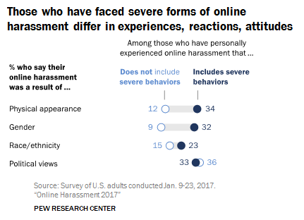

Cyberbullying
By Giulia Libé
Definition of Cyberbullying
Cyberbullying is the act of bullying using digital means. This can happen on social media, messaging platforms or gaming platforms, via computer, tablet, or mobile phone. It is an act that is perpetuated remotely, but can also happen alongside face-to-face bullying, but with the added component of leaving a digital footprint [6].
Cyberbullying comes in many forms, but some of the major trends are described by Kaspersky's website on kids' safety, [4] as follows:
- Cyberstalking – stalking via online means, emails, and social media, often with abusive intentions.
- Exclusion – the purposeful segregation and isolation of an individual from any online discussion and interaction.
- Fraping – acquiring or impersonating a victim to publish inappropriate content online in their name.
- Harassment – consistently threatening and abusive messaging.
- Outing – public humiliation of an individual through online means and publication of sensitive content or information without the subject's consent.
- Trolling – the deliberate use of offensive and hurtful language through online messaging and social media with the sole intent of provoking.
The creation of fake profiles online is with the intent of bullying others or posting cruel information (dissing), for deceptive purposes such as gaining money via fake relationships online (catfishing) or to gain trust from unaware victims to access private information to sell to third parties (trickery) [4].
According to a study from Pew Research Center (2017) [3], where a sample of 4000 Americans were interviewed, 41% of the subjects reported experiencing harassing behaviours online and 66% reported witnessing such behaviour. Among those interviewed, 1 in 10 subjects stated the most common reasons they experienced harassment were due to their physical appearance, race, or gender. The frequency of these figures rises when looking at the demographic characteristic of the sampled population. For example, 1 in 4 Black and 1 in 10 Hispanic individuals have faced harassment online. This is also seen in gender comparisons, with women targeted twice as often as men.
Online Gaming and Cyberbullying
Playing videogames can have a wide variety of positive effects on people, especially on younger age groups. Within the realm of gaming, there are varying genres on a variety of platforms that can improve a person's cognitive, emotional, and social skills, and enhance their logical and strategical take on problem solving at any age. In this way, gaming communities can be a place for socialization and meeting new people with common interests [1].
The recent transition of games to online platforms promotes the introduction of certain genres revolving around online player – versus - player interactions. For instance, this is seen in First Person Shooter (FPS) games like Call of Duty, Overwatch, and Apex. or Multiplayer Online Battle Arena (MOBA) games where teams of players compete against each other to conquer a map, like League of Legends . Inevitably, there are also negative aspects coming into play when interacting with other people in an online environment. Anonymity and the use of avatars allows users to create an alter-ego, which usually adds to the fun of the game; however, online users can use this to their advantage to bully other players without repercussions [1].
According to a study from J. W. Patchin [5], the type of game and the number of hours played have significant relevance with cyberbullying.
The above graph shows how students aged 12-17 who define themselves as gamers, engage in cyberbullying activities depending on game type. Highly competitive games such as League of Legends or Call of Duty rank in the top three, while games of lesser competitiveness have lower rates of cyberbullying activities.
How to Defend Against Cyberbullying
This matter still sparks a lot of discussions as to what would be the best course of action to defend against cyberbullying or what to do when targeted cyberbullying is witnessed. A personal take to this issue is described by Cecilia D'Anastasio in Kotaku - Game Reviews website where they detailed how the harassed player and other female gamers in this instance, plead for other players who witness cyberbullying to take a stance and protect the victim.
It is normal for an individual to feel distressed when nobody speaks up against personal attacks, but it is important to remember that silence is perhaps the best weapon in dealing with cyberbullies. Calling out people who stay silent in an online game is not the best course of action, as this would just be another form of harassment that could potentially escalate the situation.
Of course, silence does not mean “remain silent and look the other way.”. It means giving the silent treatment to the attacker, as responding just gives them more attention. Instead, report and block the perpetrator and encourage other witnesses to do so as well.
In videogames there are several ways to protect yourself from cyberbullies [1, 6, 7]:
- Block and report: Whenever a cyberbullying attack occurs the best course of action is not to engage in a discussion with the attacker. Many games have the option to block the player from ever messaging you. Then report the player to game developers. All games have the option to report players, as bullying is a bannable offense, meaning that person would not be able to log in with their account to that game anymore.
- Encourage reporting: If cyberbullying happens within a group or a community, encourage others to follow the same block and report steps, without directly engaging with the attacker.
- Stay anonymous: It is best to keep your personal information hidden when playing videogames online, as harassers may use other contact details you provided to continue with their actions (e.g., through email, messaging apps, social media, etc.).
- Take a break: The best part about online videogames is that you can exit and take a break whenever needed. Videogames are still games and should remain a form of entertainment. If the game is not fun, it is time to hit the log out button!
- Seek help: When cyberbullying occurs, the experience leaves a scar. It is not a physical one, but it hurts nonetheless, and it is always good to seek help, a person to talk to. It could be our parents, close friends, or a trusted person and if none of them are an option there are amazing communities out there ready to help, including some helplines specifically for this type of emergency (you can find the link on the side of this page).
If you are ever personally threatened and in immediate danger, please contact your local police or emergency line.
References
- Affairs (ASPA), A. S. for P. (2021, April 7). Cyberbullying and Online Gaming. StopBullying.Gov. https://www.stopbullying.gov/cyberbullying/cyberbullying-online-gaming
- D’Anastasio, C. (2017, July 7). If You Hear Someone Getting Harassed In An Online Game, Don’t Stay Silent. Kotaku. Retrieved May 2, 2022, from https://kotaku.com/if-you-hear-someone-getting-harassed-in-an-online-game-1796921373
- Duggan, M. (2017, July 11). Online Harassment 2017. Pew Research Center: Internet, Science & Tech. https://www.pewresearch.org/internet/2017/07/11/online-harassment-2017/
- Kaspersky. (2016). Cyber-bullying Facts – Top 10 Forms of Cyber Bullying. https://www.youtube.com/watch?v=0Xo8N9qlJtk
- Patchin, J. W. (2018, September 20). Are “Gamers” More Likely to be “Bullies”? Cyberbullying Research Center. https://cyberbullying.org/are-gamers-more-likely-to-be-bullies
- UNICEF. (n.d.). Cyberbullying: What is it and how to stop it. Retrieved May 2, 2022, from https://www.unicef.org/end-violence/how-to-stop-cyberbullying
- Whittaker, K. (2020, March 27). Cyber bullying in online gaming. Ghost Gaming Broadband. https://www.ghostgb.co.uk/cyber-bullying-in-online-gaming/